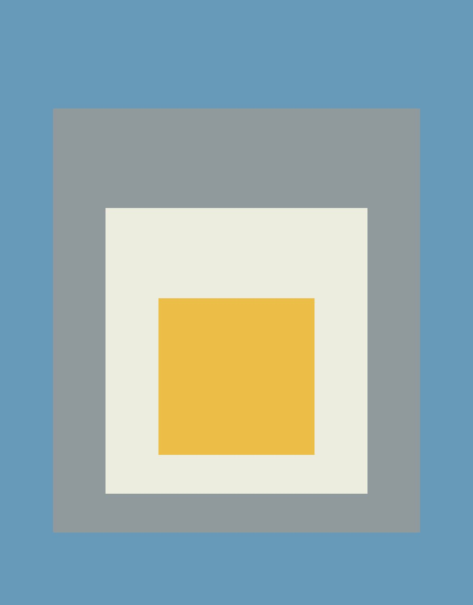
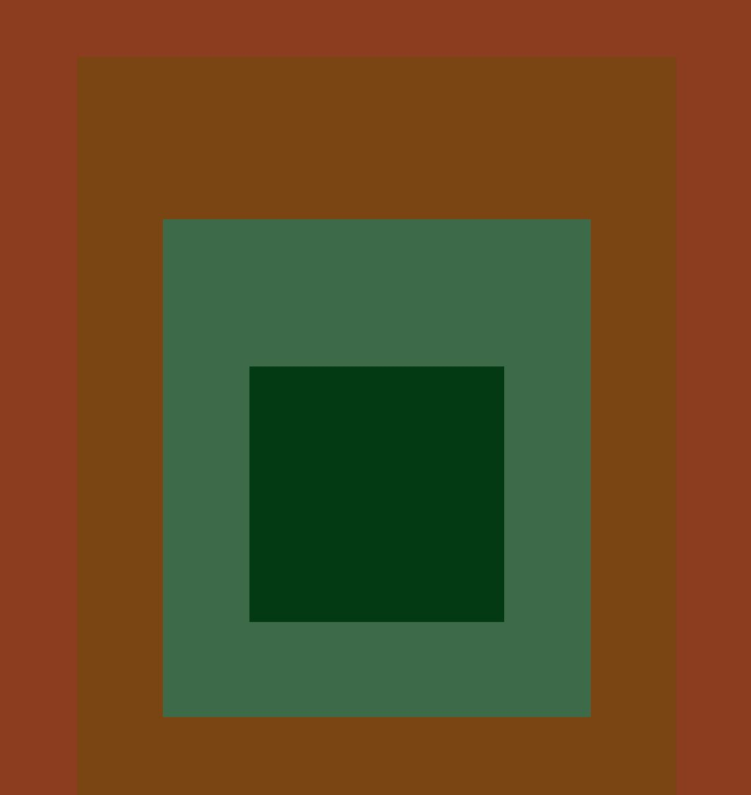
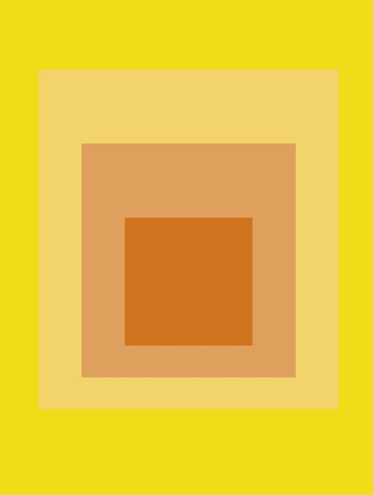

JOSEF ALBERS / HOMAGE TO THE SQUARE
1953

ASCENDING
By Nacho González
1953
WARM WELCOME
By Joan Pérez
1956
BLUE CALL
By Alba Castelló
1956
IN SPACE
By Aroa Benavent
1956
HOMAGE TO THE SQUARE
By Raül Piera
1958
APPARITION
By Magda Arques
1959
AMBER SETTING
By Julia Andreu
1960

TERRESTIAL II
By Jordi Mascarell
1961
ROOTED
By Sofía Domingo
1963
DEEP TUNE
By Ceci Castaño
1963

MIDSUMMER
By Vinni Chaluisa
1968
COOL RISING
By Alicia Gandía
1969
SOFT
By Mónica Ángel
1972
SOFT SPOKEN
By Iván Bernabeu
1982
TERRA CALIENTE
By Loren Nathalia